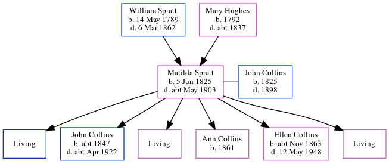

Matilda Collins (née Spratt) 1825 - c1903
[ Home ] | [ Calendar ] | [ Surnames Index ] | [ Errors ] | [ Family History ]The child of William Spratt (a labourer) and Mary Hughes, Matilda Spratt, the three times great-aunt of Nigel Horne, was born in St Nicholas-at-Wade, Kent, England on 5 Jun 18251,2,3,4,5,6,7,8 and married John Collins (a shepherd with whom she had 6 children: William, John Elgar, Elizabeth Sarah, Ann, Ellen Jane and Ada Louisa, along with 3 surviving children) in St Nicholas-at-Wade on 30 Nov 184410.
During her life, she was living at The Street in St Nicholas-at-Wade on 6 Jun 184117; at Reynolds Farm, Chislet, Kent, England on 30 Mar 18512; at Prospect Road, Minster, Thanet, Kent on 7 Apr 186118; at Cottage, Birchington, Kent on 2 Apr 187115; at Evering Farm, Alkham, Kent on 3 Apr 188114; at Everden, Alkham, Kent on 5 Apr 189112; and at Ivy Cottage, Everden, Alkham, Kent on 31 Mar 190113.
She died c. May 1903 in Swingfield, Kent, England8,9 and was buried there at St Peter's Church, The Street on 23 Jun 190311.
Parents
- William was born on 14 May 1789
- Mary was born in 1792
Children
- John Elgar was born c. 1847
- Ann was born in 1861
- Ellen Jane was born c. Nov 1863
Citations
- 1841 England Census Online publication - Provo, UT, USA: The Generations Network, Inc., 2006.Original data - Census Returns of England and Wales, 1841. Kew, Surrey, England: The National Archives of the UK (TNA): Public Record Office (PRO), 1841. Data imaged from the National
- 1851 England Census Online publication - Provo, UT, USA: The Generations Network, Inc., 2005.Original data - Census Returns of England and Wales, 1851. Kew, Surrey, England: The National Archives of the UK (TNA): Public Record Office (PRO), 1851. Data imaged from the National
- 1861 England Census Online publication - Provo, UT, USA: The Generations Network, Inc., 2005.Original data - Census Returns of England and Wales, 1861. Kew, Surrey, England: The National Archives of the UK (TNA): Public Record Office (PRO), 1861. Data imaged from the National
- 1871 England Census Online publication - Provo, UT, USA: The Generations Network, Inc., 2004.Original data - Census Returns of England and Wales, 1871. Kew, Surrey, England: The National Archives of the UK (TNA): Public Record Office (PRO), 1871. Data imaged from the National
- 1881 England Census Online publication - Provo, UT, USA: The Generations Network, Inc., 2004. 1881 British Isles Census Index provided by The Church of Jesus Christ of Latter-day Saints © Copyright 1999 Intellectual Reserve, Inc. All rights reserved. All use is subject to the
- 1891 England Census Online publication - Provo, UT, USA: The Generations Network, Inc., 2005.Original data - Census Returns of England and Wales, 1891. Kew, Surrey, England: The National Archives of the UK (TNA): Public Record Office (PRO), 1891. Data imaged from The National
- 1901 England Census Online publication - Provo, UT, USA: The Generations Network, Inc., 2005.Original data - Census Returns of England and Wales, 1901. Kew, Surrey, England: The National Archives of the UK (TNA): Public Record Office (PRO), 1901. Data imaged from the National
- England & Wales, FreeBMD Death Index: 1837-1915 Online publication - Provo, UT, USA: The Generations Network, Inc., 2006.Original data - General Register Office. England and Wales Civil Registration Indexes. London, England: General Register Office. © Crown copyright. Published by permission of the Cont
- England & Wales deaths 1837-2007 - Findmypast
- England & Wales, FreeBMD Marriage Index: 1837-1915 Online publication - Provo, UT, USA: The Generations Network, Inc., 2006.Original data - General Register Office. England and Wales Civil Registration Indexes. London, England: General Register Office. © Crown copyright. Published by permission of the Cont
- Kent, Canterbury Archdeaconry burials 1538-1988 - Findmypast
- 1891 England, Wales & Scotland Census - Findmypast (was age 64 and the wife of the head of the household)
- 1901 England, Wales & Scotland Census - Findmypast (was age 74 and the head of the household)
- 1881 England, Wales & Scotland Census - Findmypast (was age 55 and the wife of the head of the household)
- 1871 England, Wales & Scotland Census - Findmypast (was age 45 and the wife of the head of the household)
- 1851 England, Wales & Scotland Census - Findmypast (was age 26 and the wife of the head of the household)
- 1841 England, Wales & Scotland Census - Findmypast (was age 15)
- 1861 England, Wales & Scotland Census - Findmypast (was age 36 and the wife of the head of the household)
Media
Kent, Canterbury Archdeaconry burials 1538-1988 - GBPRS/CANT/D/95570642
England & Wales marriages 1837-2008 - BMD/M/1844/4/AZ/000617/029
Kent, Canterbury Archdeaconry marriages 1538-1928 - GBPRS/CANT/M/97245464/2
England & Wales deaths 1837-2007 - BMD/D/1903/2/AZ/000066/232
1891 England, Wales & Scotland Census - GBC/1891/0005975544
1901 England, Wales & Scotland Census - GBC/1901/0004521618
1881 England, Wales & Scotland Census - GBC/1881/0004928689
1841 England, Wales & Scotland Census Transcription - GBC-1841-0013960500
1851 England, Wales & Scotland Census - GBC/1851/0005819379
1861 England, Wales & Scotland Census - GBC/1861/0003518568
Family Tree
Map
Generated by ged2site. Last updated on Jul 3, 2024